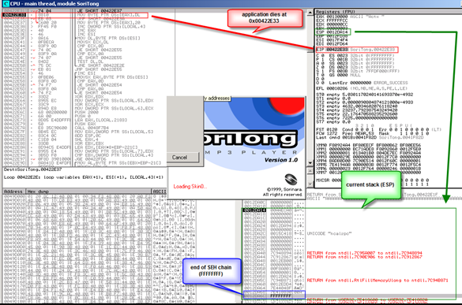

When performing a regular stack based buffer overflow, we overwrite the return address (EIP) and make the application jump to our shellcode. When doing a SEH overflow, we will continue overwriting the stack after overwriting EIP, so we can overwrite the default exception handler as well. How this will allow us to exploit a vulnerability, will become clear soon.
Let’s use a vulnerability in Soritong MP3 player 1.0, made public on july 20th 2009.
You can download a local copy of the Soritong MP3 player here :
Please log in to download Soritong MP3 Player (1.7 MiB)
The vulnerability points out that an invalid skin file can trigger the overflow. We’ll use the following basic perl script to create a file called UI.txt in the skin\default folder :
$uitxt = "ui.txt";
my $junk = "A" x 5000 ;
open(myfile,">$uitxt") ;
print myfile $junk;
Now open soritong. The application dies silently (probably because of the exception handler that has kicked in, and has not been able to find a working SEH address (because we have overwritten the address).
FIrst, we’ll work with Ollydbg/Immunity to clearly show you the stack and SEH chain. Open Ollydbg/Immunity Debugger and open the soritong.exe executable. Press the “play” button to run the application. Shortly after, the application dies and stops at this screen :

The application has died at 0x0042E33. At that point, ESP points at 0x0012DA14. Further down the stack (at 0012DA6C), we see FFFFFFFF, which looks like it indicates the end of the SEH chain. Directly below 0x0012DA14, we see 7E41882A, which is the address of the default SE handler for the application. This address sits in the address space of user32.dll.

A couple of addresses higher on the stack, we can see some other exception handlers, but all of them also belong to the OS (ntdll in this case). So it looks like this application (or at least the function that was called and caused the exception) does not have its own exception handler routine

When we look at the threads (View – Threads) select the first thread (which refers to the start of the application), right click and choose ‘dump thread data block’, we can see the Pointer to the SEH chain :


So the exception handler worked. We caused an exception (by building a malformed ui.txt file). The application jumped to the SEH chain (at 0x0012DF64).
Go to “View” and open “SEH chain”

The SE handler address points to the location where the code sits that needs to be run in order to deal with the exception.

The SE handler has been overwritten with 4 A’s. Now it becomes interesting. When the exception is handled, EIP will be overwritten with the address in the SE Handler. Since we can control the value in the handler, we can have it execute our own code.